我和埃迪·莱文（Eddy Levin）坐在他家的客厅里，他递给我一张白纸，让我用大写字母写下我的名字。莱文已经75岁了，他有一张学究气的面孔，脸上长着灰色的胡茬，前额有些长。他曾经是一名牙医，住在伦敦北部的东芬奇利，他住的那条街是繁荣而保守的英国郊区的缩影。那里都是两次世界大战之间盖起的砖房，私家车道上停着昂贵的汽车，旁边是新修剪的树篱和浅绿色的草坪。我拿着纸写下了：ALEX BELLOS（亚历克斯·贝洛斯）。
莱文拿起一个看起来像小爪子的不锈钢仪器，上面有三个尖齿。他用一只手稳稳地把它举到纸上，开始分析我的笔迹。他全神贯注地把仪器和我名字里的字母E对齐，就像一位专心准备割礼的拉比。
“非常好。”他说。
莱文的爪子仪器是他自己发明的。这三个尖齿的位置被精心排列，当爪张开时，尖齿会保持在一条直线上，并且彼此之间保持相同的比例。仪器中间的尖齿和上面的尖齿之间的距离始终是中间尖齿和下面尖齿之间距离的1.618倍。因为这个数字被称为黄金分割比，所以他称这个工具为“黄金分割仪”。（1.618也被叫作黄金比例、神圣比例或φ。）莱文把仪器放在字母E上，一个尖齿在E顶部的横线上，中间尖齿在E中间的横线上，而底部尖齿在底部那条横线上。我曾以为当我写大写字母E时，我是将中间的横线放在与顶部和底部等距的位置，但莱文的仪器显示，我下意识地将这条横线放在了略高于一半的位置，这样它就将字母的高度分成了两部分，长度比是1比1.618。虽然我只是很随意地写下了自己的名字，但我却以不可思议的精确度维持了黄金比例。
莱文微笑着，继续研究我写的字母S。他重新调整了仪器，使两边的点接触到字母的最顶端和最底端，更让我吃惊的是，中间的点正好与S曲线的弯曲处重合。
“完全准确。”莱文平静地说，“每个人的笔迹都遵循着黄金比例。”
当一条线段被切割成两段时，整条线段与较长一段的长度比例等于较长一段与较短一段的长度之比，这个精确的比例就被称为黄金分割比。换句话说，当A+B与A之比等于A与B之比时，这种比例就是黄金分割比：
一条线以黄金比的比例被成两段，被称为黄金分割，而φ就是较长的线段和较短的线段长度的比值，可以计算出它的值为（1+
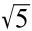
）/2。这是一个无理数，前20位的小数展开是：1.61803398874989484820…
古希腊人被φ迷住了。他们在五角星中发现了它，而五角星是毕达哥拉斯学派非常崇敬的符号。欧几里得称φ是“极端和平均的比率”，他想出了一种用圆规和直尺来构造它的方法。至少从文艺复兴时期开始，这个数字就引起了艺术家和数学家的兴趣。1509年卢卡·帕乔利（Luca Pacioli）的《神圣比例》讨论了黄金比例，罗列了该数字在许多几何结构中的表现，列奥纳多·达·芬奇绘制了图示解释。帕乔利总结道，这一比例是上帝传来的信息，它告诉了我们关于事物内在美的秘密知识。
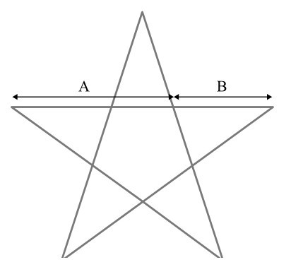
图8-1 五角星从古代起就是一种神秘的符号，它里面包含着黄金比例
数学家们对φ的兴趣来自它与数学中最著名的数列，也就是斐波那契数列的关系。这个数列以0和1开头，之后每项是前两项的和：
0，1，1，2，3，5，8，13，21，34，55，89，144，233，377，…
这些数字是这样得来的：
0+1=1
1+1=2
1+2=3
2+3=5
3+5=8
5+8=13
…
在我介绍φ和斐波那契数列之间的关联之前，让我们来研究一下数列中的数字。自然世界钟爱斐波那契数。如果你到花园里看看，你会发现大多数花的花瓣数都是斐波那契数：
3瓣 百合和鸢尾
5瓣 石竹和毛茛
8瓣 飞燕草
13瓣 金盏花和千里光
21瓣 紫菀
55瓣/89瓣 雏菊
可能并不是每一朵花的花瓣数目都恰好是这么多，但花瓣的平均数都是斐波那契数。例如，三叶草的茎上通常有三片叶子，这就是个斐波那契数。只有很少的三叶草长了四片叶子，所以我们认为四叶草很特别。四叶草很少见，因为4不是斐波那契数。
斐波那契数也出现在松果、菠萝、花椰菜和向日葵表面的螺旋排列中。如图8-2所示，你可以顺时针和逆时针数出螺旋线的数目。两个方向上数出的螺旋数是连续的斐波那契数。菠萝在两个方向上通常有5个和8个螺旋，或8个和13个螺旋。云杉球果一般有8个和13个螺旋。而向日葵可能有21个和34个，或34个和55个螺旋，我们也发现了高达144个和233个螺旋的例子。它们包含的种子越多，螺旋的数量就越大。
斐波那契数列之所以叫“斐波那契”，是因为这些项出现在斐波那契的《计算之书》中一个关于兔子的问题里。然而直到这本书出版600多年后，数论学家爱德华·卢卡斯于1877年研究这本书时，才命名了这个数列，卢卡斯决定以斐波那契的名字命名该数列，以此来向他致敬。
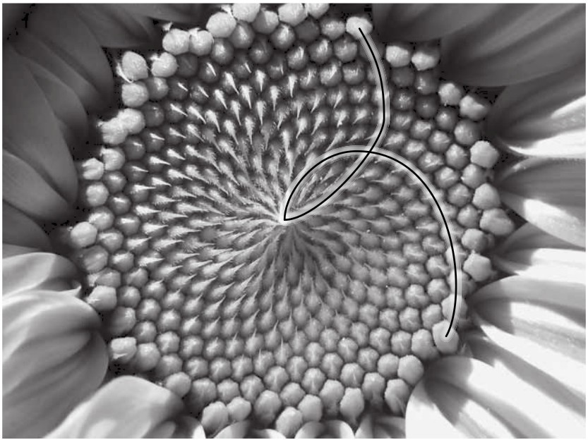
图8-2 一朵向日葵包含34个逆时针的螺旋和21个顺时针的螺旋
《计算之书》中描述了这样一个数列：假设你有一对兔子，一个月后，这对兔子又生了一对。如果每对成年的兔子每月会生一对幼崽，这些幼崽成年需要一个月的时间，那么一年后会有多少只兔子？
数一数每个月兔子的数量，就可以得到答案。第一个月后，只有一对兔子。第二个月后有两对，因为原来的一对生出了一对。第三个月后有三对，因为原来的一对再次繁殖，但第一对子女刚刚成年。在第四个月里，有两对成年兔子繁殖，在三对的基础上又增加两对。斐波那契数列由每个月兔子的总对数构成：
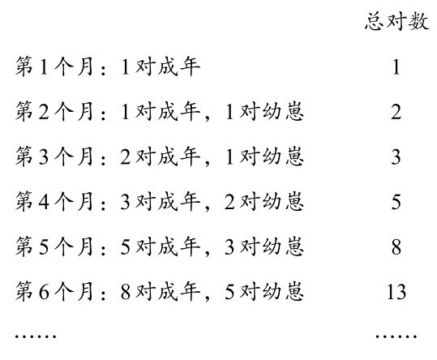
斐波那契数列的一个重要特征是它是递归的，这意味着，每一个新项都生成自之前的项的值。这有助于解释为什么斐波那契数在自然系统中如此普遍。许多生命的成长模式都是递归的。
有很多例子能够表现斐波那契数的性质，我最喜欢的例子之一是蜜蜂的繁殖模式。雄蜂只有一个亲代，也就是它的母亲。但雌蜂有两个亲代，它有一个母亲和一个父亲。所以，雄蜂有三个祖父母、五个曾祖父母、八个曾曾祖父母，等等。绘制一张雄蜂的祖先图谱（如图8-3所示），我们会发现它的每一代亲属数量都是斐波那契数。
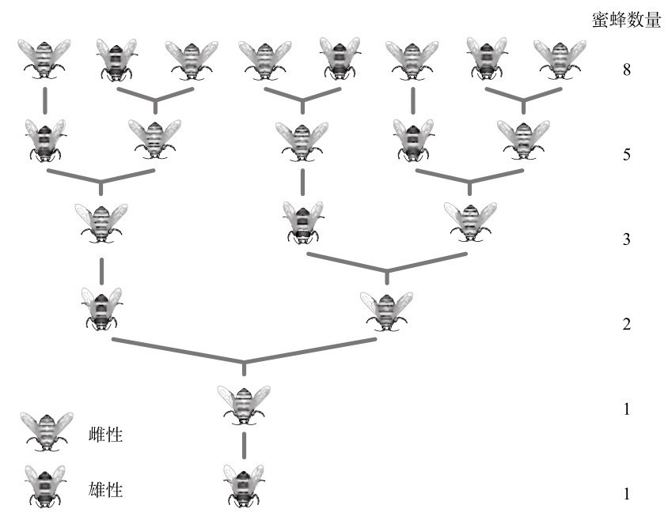
图8-3 一只雄性蜜蜂（图片底部）的家族历史
斐波那契数列除了和水果、生育力旺盛的啮齿动物和飞虫有关外，它还具有许多十分有趣的数学性质。列出前20个数字，可以帮助我们了解它的规律。我们通常用带下标的F来表示，下标表示了这个数字在数列中的位置：
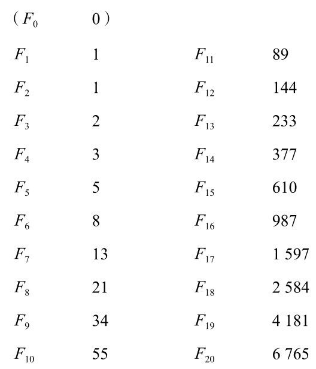
仔细研究，我们就会发现数列会以许多惊人的方式不断重复某些性质。F3 ，F6 ，F9 ，…也就是每隔两项的斐波那契数，它们都能被2整除。F4 ，F8 ，F12 ，…也就是每隔3项的斐波那契数，都可以被3整除。每隔4个斐波那契数，都可以被5整除；每隔5个斐波那契数，都可被8整除；每隔6个斐波那契数，都可被13整除。而这些除数也正是数列中的数字。
另一个惊人的例子来自1/F11 ，也就是1/89。这个数字等于以下这些数字之和：
0.0
0.01
0.001
0.0002
0.00003
0.000005
0.0000008
0.00000013
0.000000021
0.0000000034
0.00000000055
0.000000000089
0.0000000000144
也就是说，斐波那契数列再次出现了。
斐波那契数列还有另一个有趣的数学性质。取任意三个连续的斐波那契数，第一个数乘以第三个数总是和第二个数的平方相差1：
对F4 、F5 、F6 而言，
F4 ×F6 =F5 ×F5 -1，因为24=25-1
对F5 、F6 、F7 而言，
F5 ×F7 =F6 ×F6 +1，因为65=64+1
对F18 、F19 、F20 而言，
F18 ×F20 =F19 ×F19 -1，因为17480760=17480761-1
一个有着数百年历史的魔术正是以这个性质为基础。在这个魔术中，我们可以将一个面积为64个单位的正方形切成四块，然后重新组合成一个面积为65个单位的矩形。具体是这样的：画一个包含64个单位的正方形，它的边长是8。在数列中，8之前的两个斐波那契数是5和3。利用5和3的长度切割正方形，如图8-4所示。这几个部分可以重新拼成一个边长为5和13的矩形，矩形的面积是65。
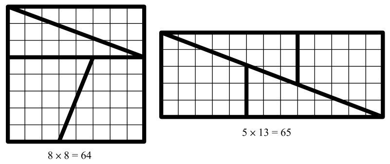
图8-4 怎么多出了一个单位的面积？
这个魔术的原理是，其实这些形状并没有完美契合。虽然肉眼看起来不太明显，但第二个矩形沿对角线中间其实有一条又长又细的缝隙，它的面积正好占据一个单位。
同样，包含169个单位面积的正方形（13×13），可以被重新排列为168个单位面积的矩形（8×21）。在这种情况下，沿对角线的部分会略有重叠。
在17世纪早期，德国天文学家约翰内斯·开普勒写道：“5比8和8比13的值大致相似，而8比13和13比21的值相当。”也就是说，他注意到了连续的斐波那契数的比率是相似的。一个世纪后，苏格兰数学家罗伯特·西姆森（Robert Simson）发现了更不可思议的事情。如果取连续斐波那契数的比值，并将它们排成数列：
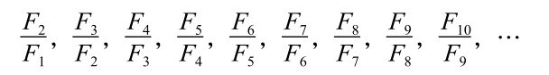
也就是，
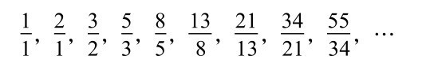
或者精确到三位小数可以写成：
1，2，1.5，1.667，1.6，1.625，1.615，1.619，1.618，…
这些项的值越来越接近φ，也就是黄金比例。
换句话说，连续的斐波那契数的比率近似等于黄金比例，随着数列不断发展，近似值的精度进一步提高。
现在让我们沿这个思路继续下去，考虑一个类斐波那契数列。它从任意两个数开始，然后通过相加得到后续的项，将数列继续下去。假设我们先从4和10开始，下一个项是14，之后是24。这个数列是：
4，10，14，24，38，62，100，162，262，424，…
现在看看连续项的比率：
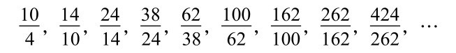
也就是：
2.5，1.4，1.714，1.583，1.632，1.613，1.620，1.617，1.618，…
斐波那契递归算法是将数列中的两个连续项相加，生成下一个项。这个算法非常强大，无论你从哪两个数开头，连续项的比率总是收敛到φ。我觉得这个数学现象太令人着迷了。
斐波那契数在自然界中随处可见，这意味着φ也普遍存在于世间。这又回到了退休牙医埃迪·莱文的观点。在职业生涯早期，他花了大量时间制作假牙，他觉得那份工作非常令人沮丧，因为无论他如何排列牙齿，他都不能使一个人的微笑看起来很自然。“我投入了心血，却要品尝失败的泪水。”他说，“无论我怎么做，牙齿看起来都很假。”但大约在那时，莱文开始学习有关数学和灵性的课程，在课上他认识了φ。莱文知道了帕乔利的《神圣比例》，并因此受到启发。如果帕乔利声称的揭示美的真谛的φ也藏在假牙的终极秘密中呢？“那是个灵感迸发的时刻。”他说。当时是凌晨2点，他冲到了书房。“我整晚都在测量牙齿。”
莱文仔细研究了照片，发现在最吸引人的一组牙齿中，上面的门牙（中切牙）的宽度与旁边的牙（侧切牙）的宽度比是φ。侧切牙的宽度也是邻牙（犬齿）的φ倍。犬齿的宽度是它旁边的牙（第一前磨牙）的φ倍。莱文没有测量实际牙齿的大小，他测量的是正面拍摄的照片中牙齿的大小。尽管如此，他还是觉得自己有了一项历史性的发现：完美的微笑美来自φ。
“我非常兴奋。”莱文回忆道。他向同事们讲述了他的发现，同事们都认为莱文是个怪人。但他没有放弃自己的想法，1978年，他在《口腔修复学杂志》上发表了一篇文章阐述这些想法。“从那时起，人们开始对这个想法有了兴趣。”他说，“现在几乎所有关于（牙齿）美学的讲座都会提到黄金比例。”莱文在他的工作中要频繁用到φ，于是在20世纪80年代初，他请一位工程师为他设计了一种仪器，可以告诉他两颗牙齿是否符合黄金比例。这就是带有三个尖齿的黄金分割仪，全世界的牙医都会购买这个仪器。
我不知道莱文自己的牙齿是不是符合黄金比例，虽然它们肯定含有不少黄金。莱文告诉我，他的仪器已不仅仅是工作的工具，他也开始测量除牙齿以外的其他物体。在花中，在沿着茎伸展的枝上，在枝干的叶上，他都发现了φ。他带着这个仪器去度假，在建筑中找到了φ。他还在人体其他部位发现了φ，包括手指关节的长度，以及鼻子、牙齿和下巴的相对位置。此外，他注意到，大多数人在写字时会遵循黄金比例，就像他在我的笔迹中发现的那样。
莱文越是努力寻找φ，就越容易找到它。“我发现了太多巧合，我开始好奇，这到底是怎么回事。”他打开笔记本电脑，给我看了一组照片，每张照片上都显示出仪器的三个测量点，展示出准确的比率。我看到了蝴蝶翅膀、孔雀羽毛和动物身上色块的照片，还有健康人的心电图读数、蒙德里安的画，还有一辆汽车。
当一个矩形两组边的比率为φ时，它就被称为“黄金矩形”。这个矩形有一个方便的特性：如果我们把它竖直切开，一部分是正方形，另一部分也是一个黄金矩形，就像母亲生出了女儿一样。
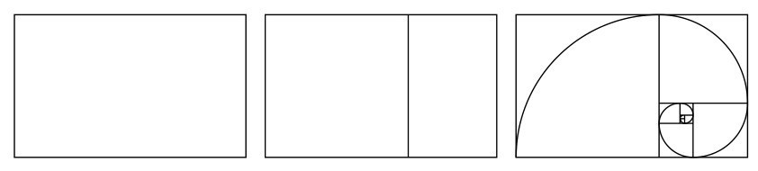
图8-5 黄金矩形和对数螺线
我们可以继续这个过程，创造孙女、曾孙女，无止境地继续下去。现在，让我们用圆规在最大的正方形里画一个四分之一圆，以右下角顶点为圆心，然后把笔尖从一个角移到另一个相邻的角。在第二大正方形中重复这个过程，以左下角的顶点为圆心，画出另一个四分之一圆，然后继续在更小的正方形里画出圆弧。最终得到的曲线就近似于对数螺线。
一条真正的对数螺线会通过相同正方形的相同顶点，但会平滑地弯曲，而不像图中的曲线那样，在四分之一圆相交的地方曲率会出现微小的不连续。在对数螺线中，从螺线中心（也就是极点）开始的直线，将在每一点以相同的角度切割螺旋曲线，这也是为什么笛卡儿称对数螺线为“等角螺线”。
对数螺线是数学中最迷人的曲线之一。在17世纪，雅各布·伯努利（Jakob Bernoulli）是第一位充分研究对数螺线性质的数学家。他称之为“神奇的螺线”（spira mirabilis）。他想在墓碑上刻一条对数螺线，但雕刻师搞错了，刻成了一条阿基米德螺线。
对数螺线的基本性质是，它的形状永远不会随图形发展而改变。伯努利在他的墓碑上用墓志铭表达了这一点——Eadem mutata resurgo，也就是“纵然改变，仍然故我”。螺线在到达极点之前旋转了无数次。如果你用显微镜观察一个对数螺线的中心，你会看到一样的形状；如果上面的对数螺线继续画下去，直到和星系一样大，你从另一个星系观察它，形状也是一样的。事实上，许多星系呈对数螺线的形状。就像分形一样，对数螺线具有自相似性，也就是说，螺线中任何一个较小的部分都和较大的部分形状相同。
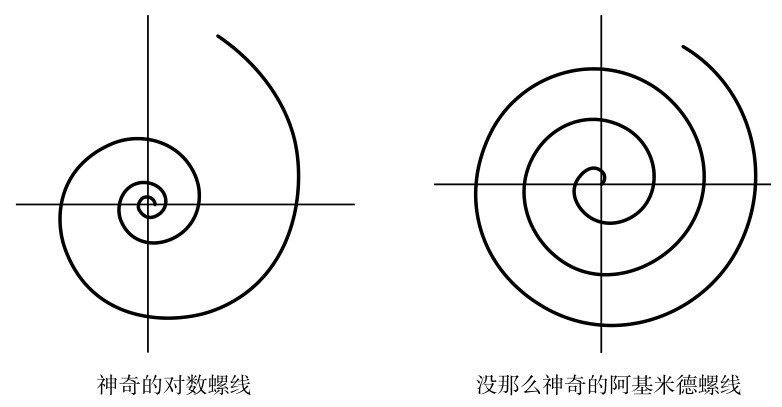
图8-6 两种螺线
自然界中，对数螺线最惊人的例子是鹦鹉螺壳。随着外壳的生长，每个连续的腔室都会越来越大，但形状与之前的腔室相同。唯一能包含大小不同、形状比例相同的腔室的螺线，就是伯努利口中的“神奇的螺线”。
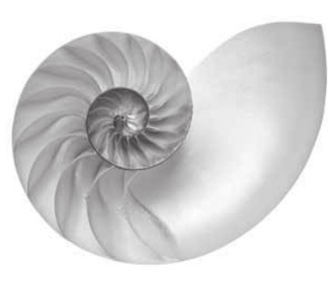
图8-7 鹦鹉螺壳
笛卡儿发现，从对数螺线极点延伸出的一条直线总是以相同的角度切割曲线，这一特征解释了游隼攻击猎物时为什么会采用对数螺线的形状。
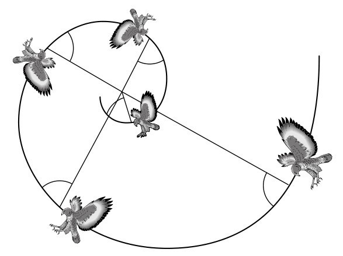
图8-8 游隼以对数螺线的路径盘旋下降，接近猎物
游隼捕猎时并不是沿直线俯冲下去，而是绕着猎物盘旋而下。2000年，杜克大学的万斯·塔克（Vance Tucker）发现了其中的原因。游隼的眼睛长在头部两侧，这意味着如果它们想看到前方，需要将头转动40度。万斯在风洞中对游隼进行了测试，结果表明，当游隼的头部处于这样一个角度时，它所受的风阻比头朝前时要大50%。游隼要想保持头部尽可能在最符合空气动力学的位置，同时又能够不断地以相同的角度观察猎物，它的飞行路径就应是一个对数螺线。
植物也像猛禽一样，会随着φ谱出的音乐而舞蹈。植物在生长时，需要让叶子分布在茎的周围，以便最大限度地利用落在每片叶子上的阳光。这就是为什么植物的叶子不会长在彼此的正上方。如果那样生长的话，底部的叶子根本就得不到阳光。
随着茎不断长高，新的叶片围绕着茎长出，每一片新叶和前一片叶子所成的夹角都是固定的。茎会以一种预设的旋转方式不断发出新叶，如图8-9所示。
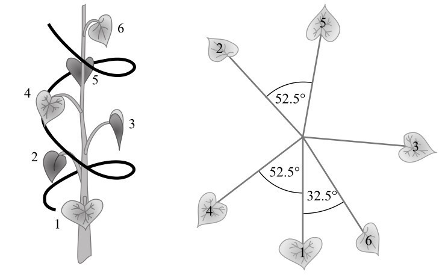
图8-9 叶子如何在茎上螺旋生长
什么样的固定角度能让叶片最大限度地利用日照，使叶片围绕茎铺开，尽量不会重叠呢？肯定不会是180度（也就是半圈），因为如果每转半圈长出一片新叶子的话，第三片叶子会长在第一片叶子的正上方。角度也不能是90度（四分之一圈），因为这样的话，第五片叶子就会在第一片叶子的正上方，而且前三片叶子都在茎的同侧，浪费了另一侧的阳光。最佳的排列角度是137.5度，图8-9表明两片叶子之间一直保持这个角度生长会形成怎样的排布。前三片叶子彼此相距一定距离，接下来的两片叶子，也就是叶子4和5，与最近的叶子也相隔了50多度，这仍然给它们留下了很大空间。第六片叶子与第一片叶子之间的夹角是32.5度。这比之前任何一片叶子都更近，这是必然的，因为叶子越来越多了，但它们之间的距离仍然很大。
137.5度这个角度被称为黄金角度。这是我们把一圈按照黄金分割比分成两份时得到的角度。换言之，我们将360度分成两个角，使大角与小角之比为φ，也就是1.618。这两个角精确到小数点后一位是222.5度和137.5度。较小的角就是黄金角度。
在数学上，黄金角度之所以能产生最佳的叶片排列与无理数的概念有关，无理数是不能用分数表示的数。如果一个角度是无理数，不管你绕着圆转多少次这个角度，永远也回不到开始的地方。用类似奥威尔的话说，有些无理数比其他数字更“无理”。而没有比黄金分割率更“无理”的数字了。（第489页的附录中有一个简短的解释。）
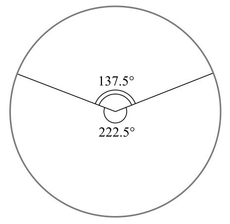
图8-10 黄金角度
由于黄金角度的存在，你通常会在植物茎上发现，当一片新叶子马上要长到前面一片叶子的正上方时，叶子的数目和环绕茎的圈数都是斐波那契数。例如，玫瑰每2圈有5片叶子，紫菀每3圈有8片叶子，扁桃每5圈长了13片叶子。之所以出现斐波那契数，是因为它们为黄金角度提供了最接近的整数比。如果一株植物每3圈就长出8片叶子，那么每3/8圈就会长出一片叶子，或者说平均而言相邻两片叶子呈135度角，这正是黄金角度的理想近似值。
黄金角度拥有的独特特性在种子的排列上体现得最为明显。想象一个头状花序，以固定的旋转角度从中心点出发产生种子。当新的种子出现时，它们会把旧种子推向离中心更远的地方。图8-11的三幅图显示了种子以三种不同的固定角度出现的模式，一个略小于黄金角度，一个等于黄金角度，还有一个略大于黄金角度。
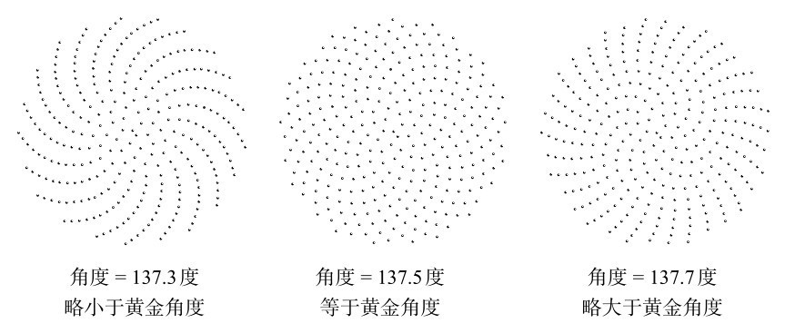
图8-11 与黄金角度有关的三种排列模式
令人惊讶的是，角度的微小变化会导致种子的位置产生巨大的差异。以黄金角度发育的种子，种子会形成一个令人着迷的紧密连接的对数螺旋模式。这是最紧凑的安排。自然之所以选择黄金角度，是因为它的紧密性，种子能更紧密地结合在一起，生物也因此变得更强壮。
19世纪末，德国的阿道夫·蔡辛（Adolf Zeising）强势地提出了一个观点，认为黄金比例是美的化身。他认为黄金比例是一个普遍规律，“作为一种至高无上的精神理想，渗透到所有的结构、形式和比例中，无论是宇宙的还是个体的，无论是有机的还是无机的，无论是声学的还是光学的。然而，它最充分的体现还是在人造的形态中”。蔡辛是第一个认为帕特农神庙正面呈黄金矩形的人。事实上，没有任何证据证明，雕塑家菲狄亚斯以及建筑项目负责人采用了黄金比例。仔细观察也会发现，它并没有完全符合黄金矩形——底座的边缘在外面。然而，在1909年前后，正是菲狄亚斯与帕特农神庙的联系，激发了美国数学家马克·巴尔（Mark Barr）的灵感，将黄金比例命名为phi（φ）。
尽管蔡辛的作品语气古怪，但实验心理学创始人之一古斯塔夫·费希纳（Gustav Fechner）还是很重视他的观点。为了发现黄金矩形比其他任何矩形都要漂亮的证据，费希纳设计了一个测试，给实验对象展示许多不同的矩形，问他们更喜欢哪个。
费希纳的研究结果似乎证明了蔡辛的观点。最接近黄金矩形的形状是首选，超过三分之一的样本人群最喜欢它。尽管费希纳的方法粗糙，但他的矩形测试开启了一个全新的科学领域——艺术实验心理学，以及它下面一个更精细的分支，也就是“矩形美学”。许多心理学家对矩形的吸引力进行了类似的调查，这并不像听起来那么荒谬。如果存在一个“最有魅力”的矩形，这个形状对商品的设计师来说一定是有用的。事实上，信用卡、香烟盒和书的比例往往都接近黄金矩形。但对φ爱好者来说不幸的是，由伦敦大学学院克里斯·麦克马纳斯（Chris McManus）领导的一个团队所做的最新和最详细的研究表明，费希纳是错的。这篇发表于2008年的论文指出，“一个多世纪以来的实验工作表明，人们对矩形的偏好实际上与黄金分割没什么关系”。然而，作者并不认为分析矩形偏好是在浪费时间。恰恰相反，他们认为，虽然没有一种矩形是人们普遍喜欢的，但在矩形审美上存在着重要的个体差异，值得进一步研究。
还有一些科学家同样受到了蔡辛理论的启发。来自纽约的弗兰克·A. 隆克（Frank A. Lonc）测量了65名女性的身高，将她们的身高与肚脐的高度进行了比较，发现这个比例是1.618。对于不符合这一比例的样本，他也有借口来解释：“那些测量值不在这个比例范围内的实验对象被证明她们在童年时髋部受过伤，或经历过其他事故。”法国建筑师勒·柯布西耶为了在建筑和设计中运用合适的比例而创造了“模度人”（Modulor man）。在他的模度人身上，男人的身高与肚脐高度的比是1829/1130，也就是1.619；而肚脐到举过头顶的右手之间的距离，与肚脐到头部的距离之比是1130/698，同样也是1.619。勒·柯布西耶设计模度是为了在建筑和设计中应用这些比例。
加里·梅斯纳（Gary Meisner）53岁，他是田纳西州的一名商业顾问。他自称是“黄金比例男子”（Phi Guy），在自己的网站上出售各种商品，包括带有φ的T恤衫和马克杯。然而，他最畅销的产品是“φ矩阵”（PhiMatrix），这款软件会在电脑屏幕上创建网格，来检查照片的黄金比例。大多数购买者用它来设计餐具、家具和家庭装潢。一些客户甚至将软件用于金融投机，在指数图上叠加网格，使用φ预测未来的趋势。“加勒比有一个人用我的矩阵进行石油贸易，中国有一个人用它进行货币交易。”他说。梅斯纳被黄金分割深深吸引，因为他相信灵性，并说黄金分割有助于他了解宇宙。但即使是他，也认为有些追求黄金分割的“同伴”过于极端了。例如，他并不相信用黄金分割能指导交易。“你在回顾市场时，很容易找到符合φ的关系。”他说，“但问题在于，回顾和预测完全是两码事。”梅斯纳的网站让他成了所有黄金分割爱好者的绝对核心。他告诉我，一个月前，他收到了来自一位无业人士的电子邮件，对方认为获得工作面试机会的唯一途径是按照黄金比例设计他的简历。梅斯纳觉得这个人被欺骗了，十分同情他。他给了他一些有关φ的设计建议，但同时建议对方花更多精力在更传统的求职方法上，比如拓展商业人脉，这样会更有成效。“我今早收到他的一封信。”梅斯纳脱口而出，“他说他获得了面试机会。他认为这都是新设计的简历的功劳！”
回到伦敦后，我向埃迪·莱文讲了这个“黄金简历”的故事，我觉得这个例子也太极端了。然而，莱文认为这并不好笑。事实上，他也认为一份符合黄金比例的简历比普通简历要好。“它看起来会更漂亮，所以看到它的人会更喜欢它。”
莱文研究黄金比例长达30年，他确信，哪里有美，哪里就有φ。“任何看起来优美的艺术品，其主导比例都会是黄金比例。”他说。他知道这个观点不受欢迎，因为它为美丽制定了一个公式，但他保证，他能在任何一件艺术品中找到φ。
面对莱文对φ的痴迷，我的本能反应是怀疑。首先，我认为他的仪器没有足够的精度来准确地测量1.618。在一幅画或一栋建筑中发现“近似于φ”的比例并不奇怪，特别是在你可以自由选择所要测量的部分的情况下。此外，由于连续斐波那契数的比率逼近1.618，因此每当有一个5×3或8×5或13×8等这类网格时，你都会找到黄金矩形。因此，这个比例自然就很常见了。
然而，莱文的例子确实有一些吸引人之处。他给我展示的每一幅图都让我感到一阵惊奇，φ真的无处不在。确实，黄金比例一直吸引着一些怪人，但这并不意味着关于它的所有理论都是不可理喻的。一些非常受尊敬的学者认为，φ创造了美，特别是在音乐创作中。人类被一个最能表达自然生长和再生的比例所吸引，这似乎并不算太牵强。
在一个明媚的夏日，莱文带我来到他的花园里。我们坐在两张草坪椅上，喝着茶。莱文告诉我，“五行打油诗”（limerick）是一种成功的诗歌形式，因为它每一行的音节数（8，8，5，5，8）都是斐波那契数。然后我想起了一件事。我问莱文知不知道iPod（苹果公司推出的音乐播放器）是什么。他说他不知道。我口袋里正好有一个，就拿了出来。我说，这是一个美丽的设计，根据他的理论，它应该包含黄金比例。
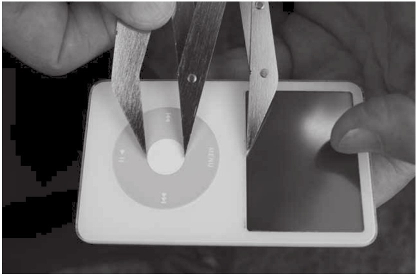
图8-12 用卡尺验证iPod的黄金比例
莱文拿着我这个白色的iPod，把它放在手掌里。他回答道，是的，它很漂亮，应该包含黄金比例。由于不想让我期望太高，他警告我，工厂生产的产品有时不会完全遵循黄金比例。“为了方便生产，形状会略有变化。”他说。
莱文打开他的卡尺，开始测量所有重要点之间的距离。
“哦，没错。”他笑了。
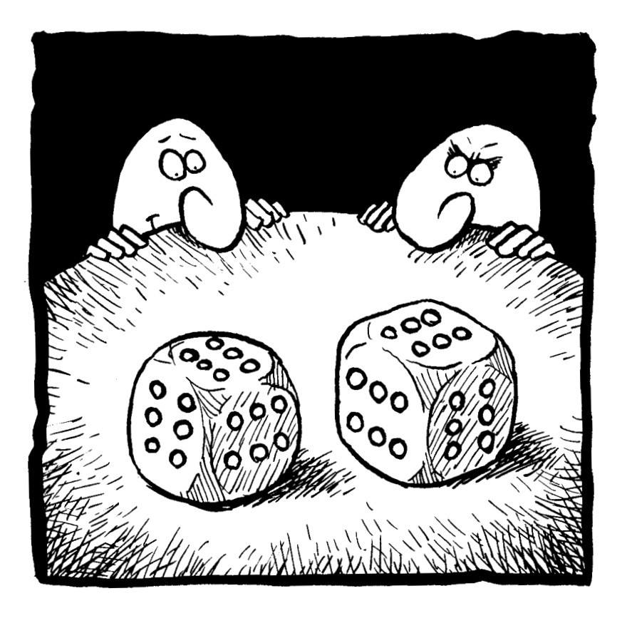